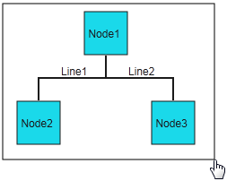
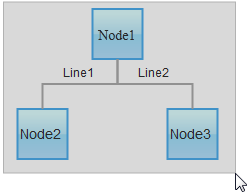
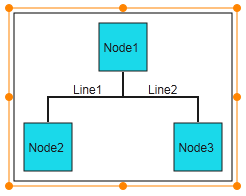
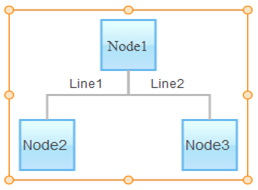
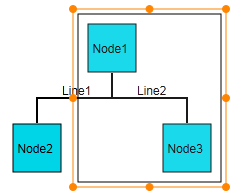
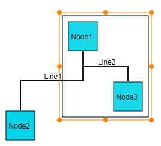
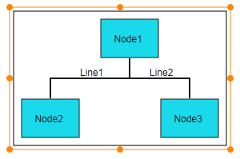
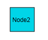

This feature allows you to select more than one node, connector, or nodes and connectors at one time using the multiple selector based on the region in the diagram page that you select.
This feature makes it convenient for you to drag, resize, and delete multiple selected nodes and connectors at the same time.
Appearance and Structure
The following figures illustrate the function of the multiple selection feature in Essential Diagram for ASP.NET MVC.


Figure 83: Nodes and Connectors before Selection Figure 84: Nodes and Connectors before Selection
(In Canvas Mode) (In SVG Mode)


Figure 85: Nodes and Connectors after Figure 86: Nodes and Connectors after
Multiple Selection (in Canvas Mode) Multiple Selection (in SVG Mode)

Figure 87: Nodes and Connectors before Dragging (on Multiple Selection)

Figure 88: Nodes and Connectors after Multiple Selection and Dragging
Figure 89: Nodes and Connectors before Resizing (on Multiple Selection)

Figure 90: Nodes and Connectors after Multiple Selection and Dragging
Figure 91: Nodes and Connectors before Deletion (on Multiple Selection)

Figure 92: Node and Connectors after Multiple Selection and Deletion
Where do I find the installed samples?
To view the samples:
1. Open the Essential Diagram sample browser from the dashboard. (Refer to the Samples and Locations section).
2. Go to the Getting Started tab and click Flat Diagram.
Properties
|
Property |
Description |
Type of Property |
Value it Accepts |
Dependencies |
|
AllowMultipleSelect |
Gets or sets a value indicating whether multiple nodes can be selected. The default value is set to true. |
Dependency property |
Boolean (true/false) |
No |
 Enabling Multiple Selection in Diagram
MVC
Enabling Multiple Selection in Diagram
MVC